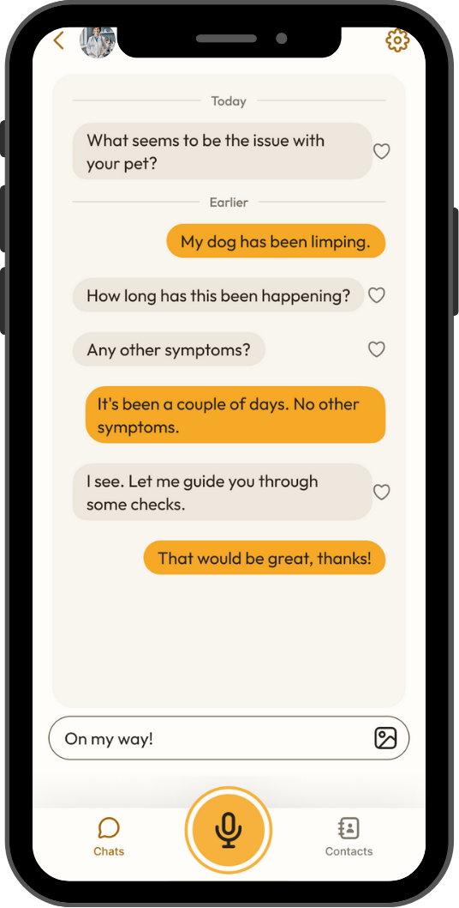
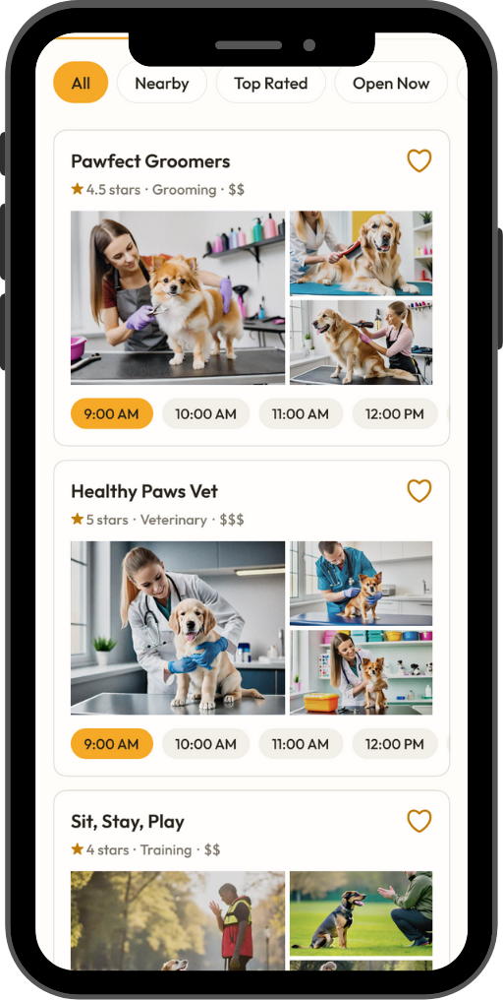
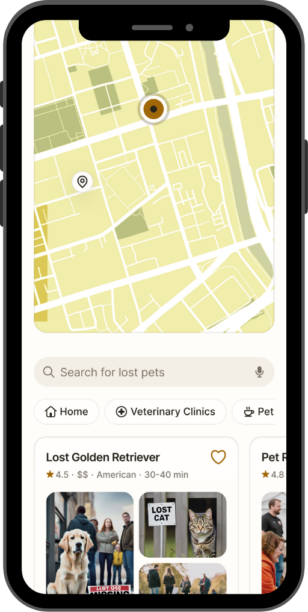
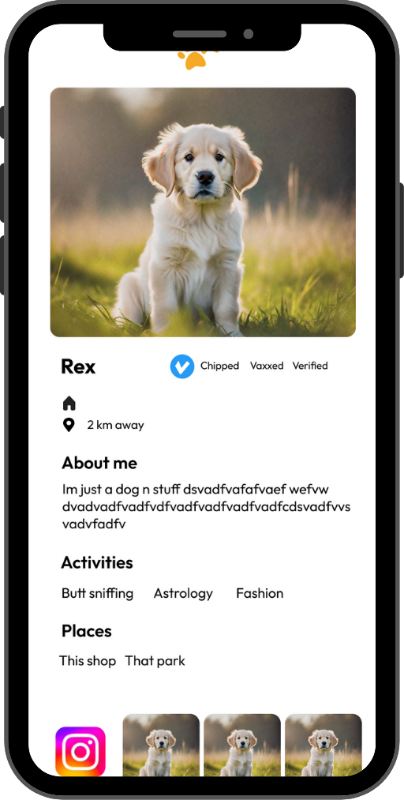

Buddy – Pet Hub App
Aplicação móvel para donos de animais de estimação que integra tecnologias de IA, IoT e sistemas multiagentes para oferecer uma experiência completa de cuidado animal.
Descrição Geral
O Buddy é uma aplicação móvel inovadora focada no bem-estar dos animais de estimação, concebida para centralizar serviços essenciais que facilitam tanto o cuidado diário quanto a interação social entre donos e animais de estimação.
A plataforma integra funcionalidades inteligentes que vão desde o diagnóstico preliminar com IA até à promoção de uma comunidade ativa e conectada, contribuindo para a otimização do cuidado animal e para a sustentabilidade ambiental.
Com uma interface intuitiva e adaptativa, o Buddy representa uma solução completa para os amantes de animais, combinando tecnologia de ponta com uma experiência de utilizador excepcional.


Funcionalidades Principais
O Buddy oferece um conjunto abrangente de funcionalidades concebidas para melhorar a experiência de cuidar de animais de estimação.
Consulta Veterinária com IA
Sistema de triagem inteligente que identifica sintomas e fornece orientações preliminares, com agendamento automático para consultas.
Achados e Perdidos
Geolocalização para mapear animais extraviados e facilitar a sua recuperação, com sistema de notificações para a comunidade local de animais de estimação.
Marketplace
Espaço dedicado para a venda e compra de produtos e serviços relacionados com o bem-estar animal, com avaliações e recomendações.
Rede Social Buddies
Fórum e chats integrados para troca de experiências entre donos de animais de estimação e promoção de eventos, feiras e campanhas de adoção.
Health
Monitorização da saúde do animal com lembretes de vacinas, medicamentos e consultas, além de dicas personalizadas para cada animal.
Image Generator
Crie imagens personalizadas do seu animal de estimação em diferentes cenários e estilos artísticos usando inteligência artificial avançada.


Inovações Tecnológicas
O Buddy incorpora tecnologias de ponta que o diferenciam no mercado de aplicações para animais de estimação, oferecendo soluções verdadeiramente inovadoras.
Agentes Digitais para Assistência Personalizada
Utilizando tecnologias de AI Agent Developing, o Buddy conta com assistentes digitais capazes de orientar os utilizadores na navegação da aplicação, sugerir produtos e auxiliar na realização de consultas e agendamentos.
Integração com Dispositivos IoT
Conectando a plataforma a dispositivos inteligentes (como coleiras com sensores e câmaras de monitorização), o Buddy fornece dados em tempo real sobre a saúde e o comportamento do animal.
Sistemas Multiagentes para Processos Complexos
Através do uso dos novos lançamentos de agentes de IA (como Operator e Deep Research), o Buddy forma sistemas multiagentes para integrar informações provenientes de diversas fontes.
Valor para os Utilizadores
O Buddy oferece benefícios significativos tanto para os donos de animais de estimação quanto para o meio ambiente e a comunidade em geral.
Centralização e Acessibilidade
Facilita o acesso a cuidados de qualidade para os animais, reunindo numa única plataforma serviços essenciais para o bem-estar animal.
Redução da Pegada Carbónica
A consulta veterinária remota e o aconselhamento via IA evitam deslocamentos desnecessários, contribuindo para a diminuição das emissões de CO₂ e promovendo a sustentabilidade ambiental.
Comunidade e Envolvimento
Incentiva a criação de uma rede social voltada ao universo dos animais de estimação, fortalecendo a troca de informações e o suporte mútuo entre os donos.
Inovação e Personalização
A integração de agentes digitais e dispositivos IoT garante um serviço personalizado e evolutivo, adaptando-se às necessidades específicas dos utilizadores e dos seus animais de estimação.
Projectos Relacionados
Conheça outros projectos inovadores da DIGISOL que podem interessar-lhe.

Interessado no Buddy?
Entre em contacto connosco para saber mais sobre como podemos adaptar esta solução para o seu negócio
Fale Connosco